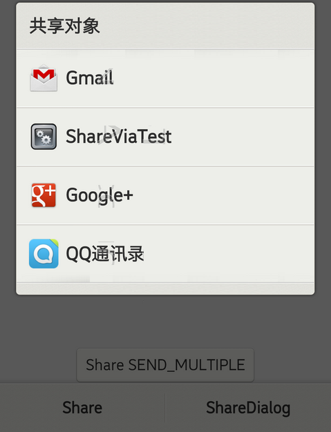
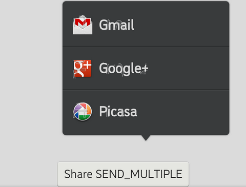

A ShareWidget represents a user want to share text,paper or file to someone via bluetooth, NFC, email, mms, msm, socialnetwork AP.


In this section, you can know how to use the ShareWidget.
// This click listener will show default share AP and set information via demand to Share AP
MyClickListener::MyClickListener(ShareWidgetTest page)
: OnClickListener(), mpPage(page) {
Context context(mpPage);
// will use the default share history file name.
mpShareWidget = new ShareWidget(context);
mpShareWidget->setShareDemand(mpPage->mpDemand);
}
MyClickListener::~MyClickListener() {
GLOGENTRY(LOG_TAG);
if (mpShareWidget) {
delete mpShareWidget;
mpShareWidget = NULL;
}
}
void MyClickListener::onClick(gaia::core::Widget * v) {
GLOGENTRY(LOG_TAG);
String shareText = mpPage->mpEdit->getTextN()->toString();
GLOG(LOG_TAG, LOGDBG, "shareText1:%s", shareText.string());
mpPage->mpDemand->putStringExtra(Demand::EXTRA_TEXT(), shareText);
switch (v->getId()) {
case 1:
mpShareWidget->setAnchorWidget(v);
// Set show popupmenu direction
mpShareWidget->setIndicatorPosition(PopupArrowPanel::BOTTOM);
// show share widget AP with popupmenu format
mpShareWidget->show();
break;
case 2:
// show share widget AP with dialog format
mpShareWidget->showAsDialog();
break;
}
}
// this click listener will show default share AP and send share file imformation(image file) to share AP
MyClickListener1::MyClickListener1(ShareWidgetTest page)
: OnClickListener()
, mpPage(page)
, mpShareWidget(NULL)
, mpDemand(new Demand(Demand::ACTION_SEND_MULTIPLE()))
, mpMyDismissListener(NULL) {
Context context(mpPage);
// if you want send multiple infos you should use ACTION_SEND_MULTIPLE.
StringArray urls(2);
urls.replaceAt("/sdcard/DICM/1.img", 0);
urls.replaceAt("/sdcard/DICM/2.img", 1);
mpDemand->putStringArrayExtra(Demand::EXTRA_STREAM(), urls);
mpDemand->setType(String("image/"));
// one history file name will corresponds to one demand,
// so if you change history file name, you should re setShareDemand.
// if you change shareDemand, all ShareWidget with same history file name in one application will also be changed.
mpShareWidget = new ShareWidget(context, String("share_multiple_history.xml"));
mpShareWidget->setShareDemand(*mpDemand);
}
MyClickListener1::~MyClickListener1() {
GLOGENTRY(LOG_TAG);
if (mpShareWidget) {
delete mpShareWidget;
mpShareWidget = NULL;
}
if (mpMyDismissListener) {
delete mpMyDismissListener;
mpMyDismissListener = NULL;
}
if (mpDemand) {
delete mpDemand;
mpDemand = NULL;
}
}
void MyClickListener1::onClick(gaia::core::Widget * v) {
switch (v->getId()) {
case 3:
mpShareWidget->setAnchorWidget(v);
mpShareWidget->setIndicatorPosition(PopupArrowPanel::BOTTOM);
mpShareWidget->show(100, -100);
break;
}
}
void MyPage::onInit(Persistence const p) {
Scene mScene = Scene::SceneFactory(this);
mpDemand = new Demand(Demand::ACTION_SEND());
mpDemand->setType(String("text/plain"));
// This click listener will show default share AP and set information via demand to Share AP
mpClickListener = new MyClickListener(this);
// this click listener will show default share AP and send share file imformation(image file) to share AP
mpClickListener1 = new MyClickListener1(this);
// Get the actionbar
ActionBar mActionBar = getActionBar(); // Must use Theme.ActionBar
if (mActionBar == NULL) {
GLOG(LOG_TAG, LOGER, "failed to create action bar...");
}
// Set the footer
Footer footer = NULL;
if (mActionBar != NULL)
footer = mActionBar->getFooter(); // Must use Theme.ActionBar.Footer
if (footer != NULL) {
mpButton1 = new FooterButton(this);
mpButton1->setId(1);
mpButton1->setText("Share");
mpButton1->setOnClickListener(mpClickListener);
mpButton2 = new FooterButton(this);
mpButton2->setId(2);
mpButton2->setText("ShareDialog");
mpButton2->setOnClickListener(mpClickListener);
footer->addWidget(mpButton1);
footer->addWidget(mpButton2);
}
mpLinearController1 = new gaia::ui::RelativeController(this);
mpParams3 = new RelativeControllerParams(
ControllerParams::WRAP_CONTENT, ControllerParams::WRAP_CONTENT);
mpParams3->setRelation(RelativeControllerParams::ALIGN_PARENT_BOTTOM);
mpParams3->setRelation(RelativeControllerParams::CENTER_HORIZONTAL);
mpDownLeft = new Button(this);
mpDownLeft->setId(3);
mpDownLeft->setText("Share SEND_MULTIPLE");
mpDownLeft->setOnClickListener(mpClickListener1);
mpDownLeft->setControllerParams(mpParams3);
mpLinearController1->addWidget(mpDownLeft);
mScene->attachController(mpLinearController1);
mScene->setupSceneLayout();
}
bool ShareWidgetTest::onCreateOptionsMenu(Menu menu) {
GLOGENTRY(LOG_TAG);
// add menu buttons for this activity
MenuItem m = menu->add(0, 0, 1, String("Option 1"));
m->setIcon(com::gaia::internal::R::drawable::btn_search);
m->setShowAsAction(MenuItem::SHOW_AS_ACTION_IF_ROOM);
ShareWidget shareWidget(Context(this));
shareWidget.setShareDemand(*mpDemand);
// set ShareWidget to Action Menu and show the icon
shareWidget.injectToMenu(0, 1, 1, String("ShareWith"), MenuItem::SHOW_AS_ACTION_IF_ROOM, menu);
// set Sharewidget to Action Menu don't show the icon
shareWidget.injectToMenu(0, 2, 1, String("ShareWith"), MenuItem::SHOW_AS_ACTION_NEVER, menu);
return true;
}
// The default name for storing share history.
static const gaia::base::String DEFAULT_SHARE_HISTORY_FILE_NAME();
// Sets the file name of a file for persisting the share history which
// history will be used for sorting share targets. This file will be used
// for all view of sharing targets.
// The history file name can be set any time, but
// after set the history file name, you also should reset ShareDemand.
void setShareHistoryFileName(const gaia::base::String& shareHistoryFile);
// Sets an demand with information about the share action. Here is a
// sample for constructing a share demand:
// Can use Demand#ACTION_SEND, Demand#ACTION_SEND_MULTIPLE
void setShareDemand(const gaia::core::Demand& demand) const;
// Call this function to show the ShareWindow.
void show(int32_t xoff = 0, int32_t yoff = 0) const;
// anchor the widget on which to pin the popup arrowpanel
void setAnchorWidget(const gaia::core::Widget* anchorWidget) const;
// Set the arrow indicator position in popup arrowpanel.
void setIndicatorPosition(int32_t direction) const;
// Call this function to show the ShareWindow as a dialog.
void showAsDialog() const;
// Inject the ShareWidget to the Menu, when your anchorView is on the ActionBar.
void injectToMenu(int32_t groupId, int32_t itemId, int32_t order,
const gaia::base::CharSequence& title, int32_t actionEnum, gaia::core::Menu* menu);
// Sets the listener to be called when the ShareWidget is dismissed.
void setOnDismissListener(gaia::ui::IOnDismissListener* onDismissListener);
// set the listener to be called when the share target selected.
void setOnHandleListener(gaia::ui::IShareTargetHandleListener* onHandleListener);